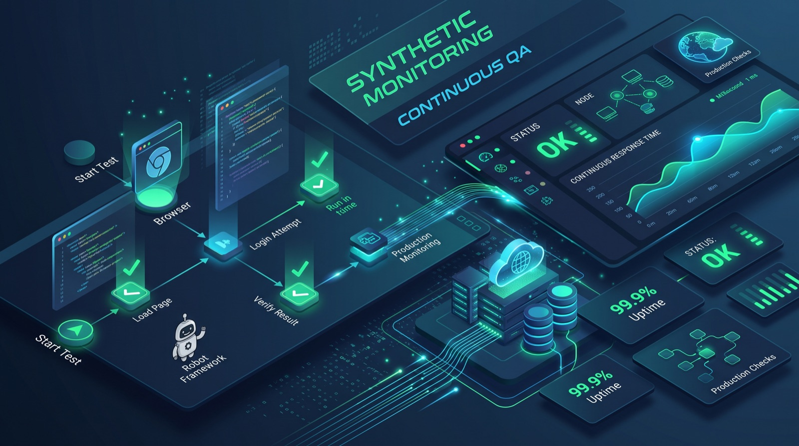

Keep Your Tests Running After Release: Checkmk Synthetic Monitoring for QA Teams
How QA teams can turn Robot Framework tests into continuous production checks with Checkmk, plus the pitfalls to plan for.
Picture a regression suite that passes on Friday. The release goes out, and on Sunday the login flow breaks because a third-party identity provider changes something. No test runs on Sunday, so the first signal is a support ticket. Most test suites stop at the deployment gate, while the riskiest period for a user journey is everything that happens after it. Checkmk offers one way to keep a small set of your end-to-end tests running against production and to treat their failures like any other operational alert.

What Checkmk is, from a tester's point of view
Checkmk is a monitoring and observability platform for hybrid environments: servers, networks, databases, cloud workloads, Kubernetes and applications, with a catalog of more than 2,000 integrations. There is a free, open-source Community edition aimed at smaller setups (roughly up to 100 hosts) and several commercial editions.
For QA work, three parts are relevant:
- Synthetic Monitoring, which runs Robot Framework tests on a schedule and reports every test as a monitored service. It is part of the commercial editions and requires an additional subscription.
- Infrastructure context. When a test fails, you can look at the host, database or network metrics in the same tool instead of guessing.
- Integrations and APIs for Jira, Slack, ServiceNow and a REST API, so alerts land where your team already works.
How the pieces fit together
The flow is straightforward once you see it:
- You write a test suite in Robot Framework.
- On a test node (Linux or Windows), the Robotmk scheduler builds an isolated Python environment for the suite and runs it according to a plan that defines the interval and options such as automatic reruns.
- Results are written to the file system and collected by the Robotmk agent plugin.
- In Checkmk, each test appears as a service with an OK, WARN or CRIT state, and you configure everything through the Robotmk scheduler rule and roll it out with the Agent Bakery.
A detail worth knowing before you start: the first versions used RCC from Robocorp to build environments. Robocorp discontinued RCC in 2024, and the Checkmk documentation recommends the newer CSM/Micromamba approach for new setups. Older tutorials that mention robot.yaml and RCC describe the legacy path.
A concrete example: monitoring the login journey
Here is a small suite written with the Robot Framework Browser library. It is deliberately split into user keywords, because that structure pays off later.
*** Settings ***
Library Browser
Suite Setup New Browser chromium headless=True
*** Variables ***
${BASE_URL} https://shop.example.com
*** Test Cases ***
Customer Can Log In
Open Login Page
Submit Login
Get Text h1 == My account
*** Keywords ***
Open Login Page
New Page ${BASE_URL}/login
Submit Login
Fill Text id=username ${MONITOR_USER}
Fill Secret id=password $MONITOR_PASSWORD
Click button[type="submit"]The credentials come in as variables from outside the suite, so they never live in the repository. Fill Secret keeps the password out of the Robot log.
Once this runs under Robotmk, Checkmk gives you a service for Customer Can Log In that tracks three things: whether the entry page responds (availability), whether the journey ends with the expected result (functionality), and how long it takes (runtime). You then add thresholds, for example a warning when the whole journey takes longer than a few seconds and a critical state when it fails or takes far longer. The right numbers depend on your baseline, so measure for a week before you commit to them.
The keyword split matters because of KPI monitoring. With the KPI discovery rule, you can promote individual keywords, such as Submit Login, to their own services (up to five per test). When the journey slows down, you can see immediately whether the time goes into loading the page or into authentication, which points you towards the frontend, the backend or the identity provider.
Turn on automatic reruns for this plan. A single failed run caused by a network blip should not wake anyone up; two consecutive failures probably should.
Where this fits in a test strategy
Synthetic monitoring does not replace your pipeline tests. It answers a different question.
| Pre-release regression | Checkmk synthetic monitor | |
|---|---|---|
| Question | Does the new build work? | Does the live system still work? |
| When it runs | On each build or before release | Continuously, on a fixed interval |
| Scope | Broad, many scenarios | Few critical journeys |
| Data | Seeded test data | Dedicated monitor accounts in production |
| Who reacts to a failure | Developers and QA | On-call operations, with QA as owner of the test |
There is a second, less obvious use: monitoring your test environments. A large share of "flaky" failures in staging come from the environment itself: a full disk, an overloaded database, an expired certificate. Pointing Checkmk (even the free Community edition) at your staging hosts lets you check infrastructure state at the moment a test failed, before you start debugging the test.
Pitfalls and limits
- Side effects in production. A checkout monitor that places real orders creates real problems. Use dedicated accounts, stop before the irreversible step, or run payment journeys against a sandbox provider where one exists.
- Flaky monitors erode trust quickly. In CI, a flaky test costs a rerun. In monitoring, it trains the on-call team to ignore alerts. Use stable selectors, reruns and realistic thresholds, and remove a monitor rather than leave it noisy.
- Ownership after UI changes. Every release can break the monitor without breaking the product. Agree up front who updates the suite, and include monitor suites in the definition of done for UI changes.
- Cost and edition limits. Synthetic Monitoring is not part of the Community edition and needs a separate subscription. For a single public website, a simpler uptime or HTTP check may be enough.
- Node maintenance. Test nodes need browser updates, credentials and network access. Treat them as production systems, including how secrets are stored on them.
- Coverage illusion. Five green monitors say nothing about the hundred journeys you did not script.
What to do next
- Explore the public demo at play.checkmk.com to see how tests appear as services, without installing anything.
- Pick two or three business-critical journeys from your existing Robot Framework suites and remove any steps with side effects.
- Install the Community edition on a spare machine and monitor your staging hosts, so infrastructure data is available the next time a test fails unexpectedly.
- If your organization has a commercial edition, follow the CSM-based Robotmk guide and set up one plan with reruns and runtime thresholds before scaling up.
Sources
Zamislite regresioni skup testova koji prođe u petak. Objava ode u produkciju, a u nedjelju se login pokvari jer je eksterni identity provider nešto promijenio. U nedjelju se nijedan test ne pokreće, pa je prvi signal tiket korisničke podrške. Većina skupova testova staje na deployment kapiji, a najrizičniji period za korisnički tok je sve ono što se dešava poslije nje. Checkmk nudi jedan način da mali broj vaših end-to-end testova nastavi da radi nad produkcijom i da se njihovi padovi tretiraju kao svaki drugi operativni alarm.
Šta je Checkmk iz ugla testera
Checkmk je platforma za monitoring i observability hibridnih okruženja: servera, mreža, baza podataka, cloud servisa, Kubernetesa i aplikacija, sa katalogom od preko 2.000 integracija. Postoji besplatno, open-source Community izdanje namijenjeno manjim okruženjima (otprilike do 100 hostova) i nekoliko komercijalnih izdanja.
Za QA posao su bitna tri dijela:
- Synthetic Monitoring, koji pokreće Robot Framework testove po rasporedu i svaki test prikazuje kao nadgledani servis. Dio je komercijalnih izdanja i zahtijeva dodatnu pretplatu.
- Kontekst infrastrukture. Kada test padne, metrike hosta, baze ili mreže možete pogledati u istom alatu umjesto da nagađate.
- Integracije i API-ji za Jiru, Slack, ServiceNow i REST API, tako da alarmi stižu tamo gdje vaš tim već radi.
Kako se dijelovi uklapaju
Tok je jednostavan kada ga jednom vidite:
- Napišete skup testova u Robot Frameworku.
- Na test čvoru (Linux ili Windows) Robotmk scheduler pravi izolovano Python okruženje za skup i pokreće ga prema planu koji definiše interval i opcije poput automatskog ponovnog pokretanja.
- Rezultati se upisuju u fajl sistem, a prikuplja ih Robotmk agent plugin.
- U Checkmku se svaki test pojavljuje kao servis sa stanjem OK, WARN ili CRIT, a sve se podešava kroz Robotmk scheduler pravilo i distribuira preko Agent Bakery-ja.
Detalj koji vrijedi znati prije početka: prve verzije su za pravljenje okruženja koristile RCC od Robocorpa. Robocorp je ugasio RCC 2024. godine, a Checkmk dokumentacija za nova podešavanja preporučuje noviji CSM/Micromamba pristup. Stariji tutorijali koji pominju robot.yaml i RCC opisuju zastarjeli put.
Konkretan primjer: nadgledanje login toka
Evo malog skupa napisanog uz Robot Framework Browser biblioteku. Namjerno je podijeljen na korisničke ključne riječi (keywords), jer se ta struktura kasnije isplati.
*** Settings ***
Library Browser
Suite Setup New Browser chromium headless=True
*** Variables ***
${BASE_URL} https://shop.example.com
*** Test Cases ***
Customer Can Log In
Open Login Page
Submit Login
Get Text h1 == My account
*** Keywords ***
Open Login Page
New Page ${BASE_URL}/login
Submit Login
Fill Text id=username ${MONITOR_USER}
Fill Secret id=password $MONITOR_PASSWORD
Click button[type="submit"]Kredencijali dolaze kao varijable izvan skupa, pa nikada ne završe u repozitorijumu. Fill Secret drži lozinku van Robot loga.
Kada ovo radi pod Robotmk-om, Checkmk vam daje servis za Customer Can Log In koji prati tri stvari: da li ulazna stranica odgovara (dostupnost), da li se tok završava očekivanim rezultatom (funkcionalnost) i koliko traje (vrijeme izvršavanja). Zatim dodate pragove, na primjer upozorenje kada cijeli tok traje duže od nekoliko sekundi i kritično stanje kada padne ili traje mnogo duže. Prave vrijednosti zavise od vaše polazne osnove, pa mjerite sedmicu dana prije nego što se obavežete na njih.
Podjela na ključne riječi je bitna zbog KPI monitoringa. Uz KPI discovery pravilo možete pojedinačne ključne riječi, poput Submit Login, pretvoriti u zasebne servise (do pet po testu). Kada se tok uspori, odmah vidite da li vrijeme odlazi na učitavanje stranice ili na autentifikaciju, što vas usmjerava ka frontendu, backendu ili identity provideru.
Uključite automatsko ponovno pokretanje za ovaj plan. Jedan pad izazvan kratkim prekidom mreže ne bi trebalo nikoga da probudi; dva uzastopna pada vjerovatno bi trebalo.
Gdje se ovo uklapa u strategiju testiranja
Synthetic monitoring ne zamjenjuje testove u pipeline-u. On odgovara na drugo pitanje.
| Regresija prije objave | Checkmk sintetički monitor | |
|---|---|---|
| Pitanje | Da li novi build radi? | Da li živi sistem i dalje radi? |
| Kada se pokreće | Na svaki build ili prije objave | Stalno, u fiksnom intervalu |
| Obim | Širok, mnogo scenarija | Nekoliko kritičnih tokova |
| Podaci | Pripremljeni test podaci | Namjenski monitor nalozi u produkciji |
| Ko reaguje na pad | Developeri i QA | Dežurni operativni tim, a QA je vlasnik testa |
Postoji i druga, manje očigledna primjena: nadgledanje vaših test okruženja. Velik dio „nestabilnih" padova na stagingu dolazi od samog okruženja: pun disk, preopterećena baza, istekao sertifikat. Ako Checkmk (čak i besplatno Community izdanje) usmjerite na staging hostove, možete provjeriti stanje infrastrukture u trenutku kada je test pao, prije nego što počnete da debagujete sam test.
Zamke i ograničenja
- Sporedni efekti u produkciji. Checkout monitor koji pravi prave narudžbe pravi i prave probleme. Koristite namjenske naloge, zaustavite se prije nepovratnog koraka ili pokrećite tokove plaćanja nad sandbox provajderom gdje on postoji.
- Nestabilni monitori brzo troše povjerenje. U CI-ju nestabilan test košta jedno ponovno pokretanje. U monitoringu uči dežurni tim da ignoriše alarme. Koristite stabilne selektore, ponovna pokretanja i realne pragove, i radije uklonite monitor nego da ga ostavite da stvara buku.
- Vlasništvo nakon UI izmjena. Svaka objava može pokvariti monitor, a da proizvod ostane ispravan. Unaprijed se dogovorite ko ažurira skup i uključite monitor skupove u definition of done za UI izmjene.
- Trošak i ograničenja izdanja. Synthetic Monitoring nije dio Community izdanja i zahtijeva posebnu pretplatu. Za jedan javni sajt možda je dovoljna jednostavnija uptime ili HTTP provjera.
- Održavanje čvorova. Test čvorovima trebaju ažuriranja browsera, kredencijali i mrežni pristup. Tretirajte ih kao produkcione sisteme, uključujući način na koji se na njima čuvaju tajne.
- Iluzija pokrivenosti. Pet zelenih monitora ne govori ništa o stotinu tokova koje niste skriptovali.
Šta dalje
- Istražite javni demo na play.checkmk.com da vidite kako se testovi prikazuju kao servisi, bez ikakve instalacije.
- Izaberite dva ili tri poslovno kritična toka iz postojećih Robot Framework skupova i uklonite sve korake sa sporednim efektima.
- Instalirajte Community izdanje na slobodnu mašinu i nadgledajte staging hostove, kako bi podaci o infrastrukturi bili dostupni sljedeći put kada test neočekivano padne.
- Ako vaša organizacija ima komercijalno izdanje, pratite Robotmk vodič zasnovan na CSM-u i podesite jedan plan sa ponovnim pokretanjima i pragovima trajanja prije nego što proširite postavku.